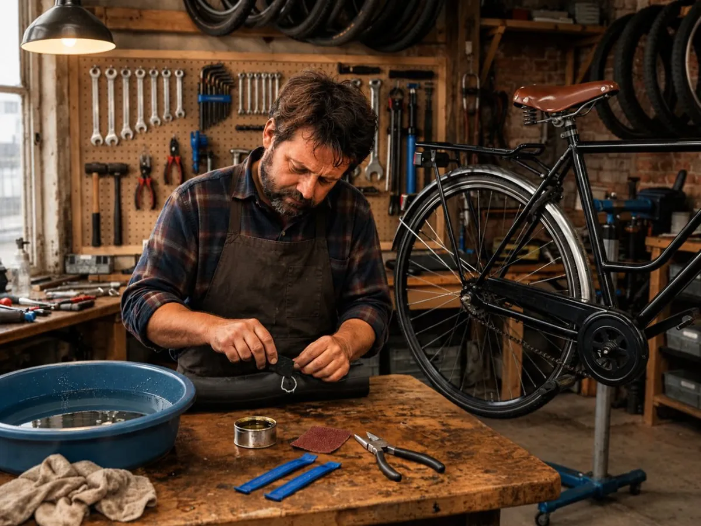

Fietsenmaker in Nijmegen: een goede fietsenmaker in jouw wijk
Bijgewerkt op 21 november 2026.
Met een lekke band wil je niet door de hele stad lopen. Daarom zetten we per wijk een of twee fietsenmakers op een rij, met wat ze goed doen en wanneer je er terechtkunt. Staat je fiets met pech ergens langs de weg? Bovenaan staat een fietsenmaker die naar je toe komt.

Zo hebben we gekozen
We lazen in oktober 2026 de websites van de ruim vijftig fietsenwinkels en fietsenmakers in onze bedrijvengids. Per wijk kozen we zaken met een eigen werkplaats. We letten op hoe snel je geholpen wordt, of je vooraf hoort wat het kost, de openingstijden en wat de zaak bijzonder maakt.
Goed om te weten: bijna alle fietsenmakers zijn op maandag en zondag dicht. Bel bij een grotere reparatie even vooraf.
Overal in de stad: de fietsenmaker komt naar je toe
Fietsambulance Nijmegen: reparatie op de plek waar je staat
Deze fietsenmaker heeft geen winkel, maar komt naar je toe: thuis, op school, op je werk of waar je met pech staat. Je wordt meestal binnen een dag geholpen, en binnen Nijmegen betaal je geen voorrijkosten. Alleen in de week van de Vierdaagse geldt dat niet.
Ook met een e-bike of fatbike kun je hier terecht. Heb je haast, dan is er een spoedoptie in de avond. Vraag vooraf gerust wat het ongeveer gaat kosten. Bellen of appen kan van dinsdag tot en met zaterdag.
Goed voor: wie geen tijd heeft om de fiets weg te brengen.
In en rond het centrum
Bikeshop Nijmegen: veel klussen terwijl je wacht
Midden in het centrum repareert Bikeshop Nijmegen veel klussen terwijl je wacht, zodat je snel weer kunt fietsen. Er staan nieuwe en gebruikte fietsen en je kunt er advies krijgen als je twijfelt.
Let op de openingstijden: op donderdag en zondag is de zaak dicht, op zaterdag tot vier uur.
Goed voor: een lekke band tijdens een dag in de stad.
Kersten Wielersport: voor je racefiets
Rijd je op een racefiets of mountainbike, dan is Kersten Wielersport in de Stikke Hezelstraat het adres. De zaak zit er al sinds 1957 en verkoopt onder meer Bianchi. In de werkplaats houden ze je sportfiets in vorm.
Open van dinsdag tot en met zaterdag, op donderdag tot acht uur. Maak voor onderhoud even een afspraak.
Goed voor: wielrenners en mountainbikers.
Rijwielhandel de Concurrent: van opoefiets tot bakfiets
In de Van Trieststraat kies je uit nieuwe en tweedehands fietsen, van e-bikes en bakfietsen tot opoefietsen en kinderfietsen. In de eigen werkplaats doen ze onderhoud en reparaties.
Er ligt veel op voorraad, van banden en verlichting tot tassen en manden. Open van dinsdag tot en met zaterdag.
Goed voor: wie een stadsfiets zoekt en meteen alles erbij wil.
Nijmegen-Oost
Romik: ook lastige reparaties
In de werkplaats van Romik aan de Professor Molkenboerstraat kun je vaak meteen terecht, en kleine klussen zijn regelmatig klaar terwijl je wacht. Romik heeft ruim twintig jaar ervaring, van antieke tot moderne fietsen, en pakt ook reparaties op waar anderen niet aan beginnen.
Je hoort vooraf wat het kost, en bij extra werk belt hij eerst. Er staan ook opgeknapte tweedehands fietsen te koop. Open van dinsdag tot en met zaterdag.
Goed voor: studenten en wie een oude fiets wil redden.
't Fietskeldertje: vaak binnen een dag klaar
't Fietskeldertje in de Van den Havestraat verkoopt stadsfietsen, e-bikes, moederfietsen, kinderfietsen en vouwfietsen, en ook tweedehands fietsen. Bij reparaties hoor je vooraf ongeveer wat het kost, en vaak staat je fiets binnen een dag klaar.
Twijfel je tussen twee modellen, spreek dan een gratis proefrit af. Open van dinsdag tot en met zaterdag.
Goed voor: gezinnen in Oost die een nieuwe fiets zoeken.
Fietswerkplaats van Stichting Gast: goed doel, goede fiets
Aan de Pontanusstraat knappen ongedocumenteerde vluchtelingen en vrijwilligers samen gebruikte fietsen op. Die worden verkocht met een maand garantie. Een fijne plek als je een betaalbare stadsfiets zoekt, en ondertussen steun je een goed doel.
Je kunt er ook met je eigen kapotte fiets terecht. De werkplaats is alleen open op maandag- en woensdagmiddag.
Goed voor: wie een kleine beurs heeft.
Brakkenstein en het Radboud-terrein
Benschop: vanaf acht uur open
Werk of studeer je op het Radboud-terrein? Benschop aan het Geert Grooteplein Zuid is op werkdagen al om acht uur open. De werkplaats helpt je meestal nog dezelfde dag, en tijdens de reparatie kun je een leenfiets meekrijgen als er een vrij is.
Strand je onderweg, dan halen ze je fiets op en brengen ze hem terug. In het weekend is deze winkel dicht.
Goed voor: wie op de campus of in het ziekenhuis werkt.
Evers Janssen: fietsenmaker uit de buurt
Aan de Kanunnik van Osstraat in Brakkenstein doet Evers Janssen service en reparaties. Ze kunnen ook je accu testen. In de winkel staan stadsfietsen, e-bikes, moederfietsen en bakfietsen, en ze verhuren fietsen.
Open van dinsdag tot en met zaterdag. Bel voor een reparatie even voor een afspraak.
Goed voor: buurtbewoners met een e-bike.
Nijmegen-Zuid
Rik's Fietsenmakerij: koffie en een praatje
Rik en Christa Verhagen runnen aan de Van Peltlaan een kleine buurtfietsenmakerij. Bel je vroeg met een kleine klus, dan rijd je vaak dezelfde dag weer weg. Je krijgt er een kop koffie en een praatje.
Ze werken aan stadsfietsen, racefietsen, mountainbikes en kleine bakfietsen, en doen mechanische reparaties aan e-bikes. Heb je online een fiets gekocht, dan bouwen ze hem voor je op. Open van dinsdag tot en met zaterdag.
Goed voor: wie persoonlijke aandacht wil.
Grootstal Tweewielers: elk A-merk te bestellen
Grootstal Tweewielers aan de Hatertseweg heeft een werkplaats met BOVAG-gecertificeerde monteurs. In de winkel staan e-bikes, stadsfietsen, transportfietsen en kinderfietsen, en ze kunnen bijna elk A-merk voor je bestellen.
Ook voor een fiets via je werkgever kun je hier terecht. Een reparatieafspraak plan je via de site. Open van dinsdag tot en met zaterdag.
Goed voor: wie een fiets van de zaak zoekt.
Nijmegen-West
Bikewerk: fietsen met een goed verhaal
Bikewerk aan de Ambachtsweg is een maatschappelijke onderneming van Pluryn. Mensen voor wie werk niet vanzelf gaat, leren hier het fietsvak. Je komt er voor reparatie, onderhoud en nieuwe of tweedehands fietsen, ook elektrisch.
Geen tijd? Ze halen je fiets op en brengen hem terug. Open op werkdagen tot half vijf.
Goed voor: wie met een reparatie ook iets goeds wil doen.
Wouter Fiets Service: vader en zoon
Aan de St. Agnetenweg runt fietstechnicus Wouter Gabeler een familiebedrijf, samen met zijn zoon Robbin. Ze doen onderhoud, reparatie en verkoop, met veel elektrische trekkingfietsen van Victoria en Pointer.
Ook voor leasen of in termijnen betalen kun je hier informatie krijgen. Open van dinsdag tot en met zaterdag.
Goed voor: wie een e-bike zoekt met service dichtbij.
Dukenburg
Re-Cycled: zwerffietsen met een tweede leven
In winkelcentrum Dukenburg knapt Re-Cycled afgedankte fietsen op, zoals zwerffietsen die anders bij het schroot belanden. Je kiest uit dames-, heren-, kinder- en transportfietsen en e-bikes, vaak van bekende merken. Op een opgeknapte fiets krijg je drie maanden garantie.
Je eigen fiets laten repareren kan ook, waar het kan met tweedehands onderdelen. Open van dinsdag tot en met zaterdag.
Goed voor: een duurzame tweedehands fiets.
Fietsreparatie Dukenburg: stallen en repareren
Al sinds 1986 zit op het Zwanenveld een bewaakte fietsenstalling. Terwijl je boodschappen doet, kunnen ze je fiets of e-bike repareren. Ook met een fatbike kun je hier terecht. Er staan tweedehands fietsen te koop.
Open van dinsdag tot en met zaterdag, en van april tot en met augustus ook op maandag.
Goed voor: een reparatie tijdens de boodschappen.
Lent
De Fietsendokter: ook op donderdagavond
In de Weverstraat werkt Robbert Baggerman vanuit huis, als kleinzoon van de eerste rijwielhersteller van Lent. Je fiets krijgt de aandacht die hij nodig heeft, zonder poespas.
Reparaties gaan alleen op telefonische afspraak. Op donderdagavond kun je ook terecht, handig als je overdag werkt.
Goed voor: wie overdag geen tijd heeft.
Zoevers: alles voor je e-bike
Net over de brug, aan de Griftdijk Zuid, draait Zoevers helemaal om elektrische fietsen: stadsfietsen, sportieve modellen, bakfietsen en speed pedelecs. Je kunt rustig proefrijden.
Gediplomeerde e-bikemonteurs doen het onderhoud en de reparaties. Een afspraak plan je online. Open van dinsdag tot en met zaterdag.
Goed voor: onderhoud aan je e-bike of speed pedelec.
Nog meer fietsenmakers
- Wheels Tweewielers aan de St. Annastraat: veel tweedehands fietsen, en een leenfiets in overleg tijdens de reparatie.
- Bike Totaal Thoonen aan de Dennenstraat: een grote showroom met proefritten en gecontroleerde tweedehands fietsen.
Alle fietsenwinkels staan in de bedrijvengids onder fietsenwinkels. Op zoek naar een e-bike? Lees zo vind je een e-bike die bij jou past.
Meer in onze gids parkeren en bereikbaarheid in Nijmegen.
Veelgestelde vragen
Welke fietsenmaker in Nijmegen komt aan huis?
Fietsambulance Nijmegen komt naar je toe, thuis, op je werk of waar je met pech staat. Binnen Nijmegen betaal je geen voorrijkosten, behalve in de week van de Vierdaagse.
Welke fietsenmaker in Nijmegen repareert terwijl je wacht?
Bikeshop Nijmegen in de In de Betouwstraat en Romik aan de Professor Molkenboerstraat doen kleine klussen vaak meteen.
Welke fietsenmaker is op maandag open?
De meeste fietsenmakers zijn op maandag dicht. Bikeshop Nijmegen en Benschop aan het Geert Grooteplein Zuid zijn wel open. Wheels Tweewielers en de Fietswerkplaats van Stichting Gast zijn op maandagmiddag open, en Fietsreparatie Dukenburg van april tot en met augustus.
Waar koop je een goedkope tweedehands fiets in Nijmegen?
Bij de Fietswerkplaats van Stichting Gast (met een maand garantie), Re-Cycled in Dukenburg (drie maanden garantie) en Romik in Oost.
Waar laat je een e-bike repareren in Nijmegen?
Bij Zoevers in Lent, met gediplomeerde e-bikemonteurs, en bij onder meer Evers Janssen, Benschop en Fietsambulance Nijmegen.